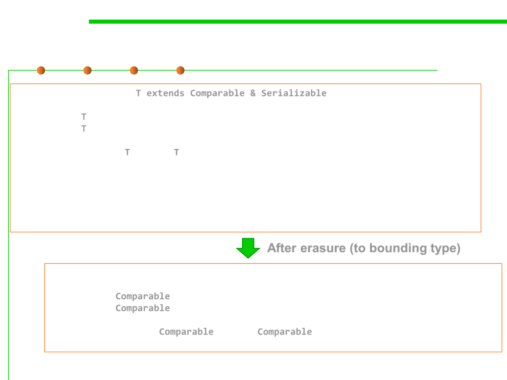

Type Erasure
5.2 Construction for Reuse
public class Interval<T extends Comparable & Serializable> implements Serializable
{
private T lower;
private T upper;
...
public Interval(T first, T second)
{
if (first.compareTo(second) <= 0) { lower = first; upper = second; }
else { lower = second; upper = first; } //此处因为限定了T的具体类型，所以可以调
用类型相关的具体方法
}
}
After erasure (to bounding type)
public class Interval implements Serializable
{
private Comparable lower;
private Comparable upper;
...
public Interval(Comparable first, Comparable second) { . . . }
}